SLY is a Common Lisp IDE for Emacs. This is the manual for version 1.0.42. (Last updated October 28, 2026)
Written for SLIME Luke Gorrie and others, rewritten by João Távora for SLY.
This file has been placed in the public domain.
SLY is Sylvester the Cat’s Common Lisp IDE. It extends Emacs with support for interactive programming in Common Lisp.
The features are centered around an Emacs minor-mode called
sly-mode, which complements the standard major-mode
lisp-mode for editing Lisp source files. sly-mode
adds support for interacting with a running Common Lisp process for
compilation, debugging, documentation lookup, and so on.
SLY attempts to follow the example of Emacs’s own native Emacs-Lisp environment. Many of the keybindings and interface concepts used to interact with Emacs’s Elisp machine are reused in SLY to interact with the underlying Common Lisp run-times. Emacs makes requests to these processes, asking them to compile files or code snippets; deliver introspection information various objects; or invoke commands or debugging restarts.
Internally, SLY’s user-interface, written in Emacs Lisp, is connected via sockets to one or more instances of a server program called “Slynk” that is running in the Lisp processes.
The two sides communicate using a Remote Procedure Call (RPC) protocol. The Lisp-side server is primarily written in portable Common Lisp. However, because some non-standard functionality is provided differently by each Lisp implementation (SBCL, CMUCL, Allegro, etc...) the Lisp-side server is again split into two parts – portable and non-portable implementation – which communicate using a well-defined interface. Each Lisp implementation provides a separate implementation of that interface, making SLY as a whole readily portable.
SLY is a direct fork of SLIME, the “Superior Lisp Interaction Mode for Emacs”, which itself derived from previous Emacs programs such as SLIM and ILISP. If you already know SLIME, SLY’s closeness to it is immediately apparent. However, where SLIME has traditionally focused on the stability of its core functionality, SLY aims for a richer feature set, a more consistent user interface, and an experience generally closer to Emacs’ own.
To understand the differences between the two projects read SLY’s NEWS.md file. For a hand-on approach to these differences you might want to A SLY tour for SLIME users.
This chapter tells you how to get SLY up and running.
SLY supports a wide range of operating systems and Lisp implementations. SLY runs on Unix systems, Mac OSX, and Microsoft Windows. GNU Emacs versions 24.4 and above are supported. XEmacs or Emacs 23 are notably not supported.
The supported Lisp implementations, roughly ordered from the best-supported, are:
Most features work uniformly across implementations, but some are prone to variation. These include the precision of placing compiler-note annotations, XREF support, and fancy debugger commands (like “restart frame”).
By far the easiest method for getting SLY up and running is using Emacs’ package system configured to the popular MELPA repository. This snippet of code should already be in your configuration:
(add-to-list 'package-archives
'("melpa" . "https://melpa.org/packages/"))
(package-initialize)
You should now be able to issue the command M-x package-install, choose sly and have it be downloaded and installed automatically. If you don’t find it in the list, ensure you run M-x package-refresh-contents first.
In other situations, such as when developing SLY itself, you can access the Git repository directly:
git clone https://github.com/joaotavora/sly.git
If you want to hack on SLY, use Github’s fork functionality and submit a pull request. Be sure to first read the CONTRIBUTING.md file first.
If you installed SLY from MELPA, it is quite possible that you
don’t need any more configuration, provided that SLY can find a
suitable Lisp executable in your PATH environment variable.
Otherwise, you need to tell it where a Lisp program can be found, so
customize the variable inferior-lisp-program (see Defcustom variables) or add a line like this one to your ~/.emacs
or ~/.emacs.d/init.el (see Emacs Init File).
(setq inferior-lisp-program "/opt/sbcl/bin/sbcl")
After evaluating this, you should be able to execute M-x sly and be greeted with a REPL.
If you cloned from the Git repository, you’ll have to add a couple of more lines to your initialization file configuration:
(add-to-list 'load-path "~/dir/to/cloned/sly") (require 'sly-autoloads)
SLY can either ask Emacs to start its own Lisp subprocesss or connect to a running process on a local or remote machine.
The first alternative is more common for local development and is started via M-x sly. The “inferior” Lisp process thus started is told to load the Lisp-side server known as “Slynk” and then a socket connection is established between Emacs and Lisp. Finally a REPL buffer is created where you can enter Lisp expressions for evaluation.
The second alternative uses M-x sly-connect. This assumes that that a Slynk server is running on some local or remote host, and listening on a given port. M-x sly-connect prompts the user for these values, and upon connection the REPL is established.
A big part of Emacs, and Emacs’s extensions, are its near-infinite customization possibilities. SLY is no exception, because it runs on both Emacs and the Lisp process, there are layers of Emacs-side customization and Lisp-side customization. But don’t be put off by this! SLY tries hard to provide sensible defaults that don’t “hide” any fanciness beneath layers of complicated code, so that even a setup with no customization at all exposes SLY’s most important functionality.
Emacs-side customization is usually done via Emacs-lisp code snippets added to the user’s initialization file, usually $HOME/.emacs or $HOME/.emacs.d/init.el (see Emacs Init File).
90% of Emacs-lisp customization happens in either “keymaps” or
“hooks” (see Emacs-side). Still on the Emacs side, there is also a
separate interface, appropriately called customize (or sometimes
just custom), that uses a nicer UI with mouse-clickable buttons
to set some special variables. See Defcustom variables.
Lisp-side customization is done exclusively via Common Lisp code snippets added to the user’s $HOME/.slynkrc file. See Lisp-side (Slynk).
As a preview, take this simple example of a frequently customized part of
SLY: its keyboard shortcuts, known as “keybindings”. In the
following snippet M-h is added to sly-prefix-map thus
yielding C-c M-h as a shortcut to
the sly-documentation-lookup command.
(eval-after-load 'sly `(define-key sly-prefix-map (kbd "M-h") 'sly-documentation-lookup))
By default, the command M-x sly starts the program specified
with inferior-lisp-program, a variable that you can customize
(see Defcustom variables). However, if you invoke M-x sly
with a prefix argument, meaning you type C-u M-x sly then
Emacs prompts for the program which should be started instead.
If you need to do this frequently or if the command involves long
filenames it’s more convenient to set
the sly-lisp-implementations variable in your initialization file
(see Emacs Init File). For example here we define two programs:
(setq sly-lisp-implementations
'((cmucl ("cmucl" "-quiet"))
(sbcl ("/opt/sbcl/bin/sbcl") :coding-system utf-8-unix)))
Now, if you invoke SLY with a negative prefix argument,
M-- M-x sly, you can select a program from that list. When
called without a prefix, either the name specified in
sly-default-lisp, or the first item of the list will be used.
The elements of the list should look like
(NAME (PROGRAM PROGRAM-ARGS...) &key CODING-SYSTEM INIT INIT-FUNCTION ENV)
NAMEis a symbol and is used to identify the program.
PROGRAMis the filename of the program. Note that the filename can contain spaces.
PROGRAM-ARGSis a list of command line arguments.
CODING-SYSTEMthe coding system for the connection. (see sly-net-coding-system)
INITshould be a function which takes two arguments: a filename and a
character encoding. The function should return a Lisp expression as a
string which instructs Lisp to start the Slynk server and to write the
port number to the file. At startup, SLY starts the Lisp process
and sends the result of this function to Lisp’s standard input. As
default, sly-init-command is used. An example is shown in
Loading Slynk faster.
INIT-FUNCTIONshould be a function which takes no arguments. It is called after the connection is established. (See also sly-connected-hook.)
ENVspecifies a list of environment variables for the subprocess. E.g.
(sbcl-cvs ("/home/me/sbcl-cvs/src/runtime/sbcl"
"--core" "/home/me/sbcl-cvs/output/sbcl.core")
:env ("SBCL_HOME=/home/me/sbcl-cvs/contrib/"))
initializes SBCL_HOME in the subprocess.
The chances are that if you’re into Common Lisp, you already know about SLIME, the project that originated SLY. Itself originating in older Emacs extensions SLIM and ILISP, SLIME has been around for at least a decade longer than SLY and is quite an amazing IDE. It’s likely that most Lispers have some experience with it, making it a good idea to provide, in the shape of a quick tutorial, a hands-on overview of some of the improvements of SLY over SLIME.
When you start SLY with M-x sly (see Basic setup) you are
greeted with its REPL, a common starting point of Lisp hacking
sessions. This has been completely redesigned in SLY: you can spawn
multiple REPL sessions with sly-mrepl-new; copy objects from most
places directly into it (with M-RET and M-S-RET); use
powerful incremental history search (with C-r) found in most
modern shells; and get real-time assistance when “backreferecing”
previous evaluation values in your Lisp input.
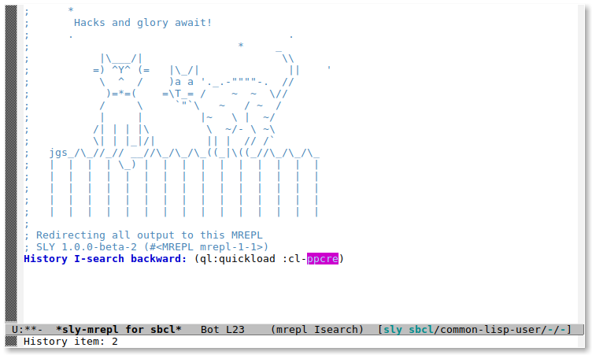
Starting from the new REPL, let’s showcase some of SLY’s features.
Let’s pretend we want to hack an existing Lisp project. We’ll pick
SLY itself, or rather its Lisp server, called Slynk. Let’s pretend
we’re intrigued by the way its “flex”-style completion works. What is
flex completion, you ask? Well, if you’re at the REPL you can try it
now: it’s a way of TAB-completing (see Auto-completion) symbol
names based on educated guesses of a few letters. Thus if we type
mvbind, SLY guesses that we probably meant
multiple-value-bind, and if we type domat it might
possibly guess cl-ppcre:do-matches. Let’s dig into the code that
makes this happen.
But how? Where to begin, given we know so little about this project?
Well, a good starting point is always the apropos functionality,
which is a grep of sorts, but aware of the symbols loaded in your
Lisp, rather the contents of text files. Furthermore, in
SLY, sly-apropos will do a regular-expression-enabled symbol
search, which will help us here since we don’t yet know any symbols
names of this mysterious flex feature.
To enable regular expression searches you need the CL-PPCRE
library is loaded (else sly-apropos falls back to regex-less
mode). If you have Quicklisp
installed (you do, right?) you need only type (ql:quickload
:cl-ppcre) now from the REPL.
Thus, if we want to hack SLY’s flex completion, and don’t
known any of its symbol’s names, we type
C-c C-d C-z (the shortcut for M-x sly-apropos-all) and
then type in “sly.*flex” at the prompt. We follow with enter
or return (abbreviated RET or C-m). SLY should now
present all Lisp symbols matching your search pattern.
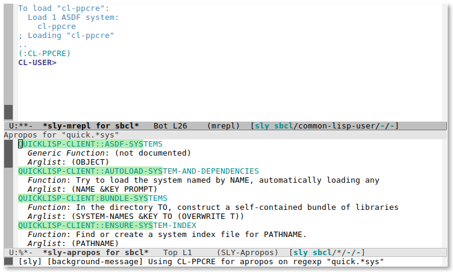
In the apropos buffer, let’s grab the mouse and right-click the
symbol SLYNK-COMPLETIONS:FLEX-COMPLETIONS. We’ll be presented
with a context menu with options for describing the symbol, inspecting
it, or navigating to its source definition. In general, the Lisp-side
objects that SLY presents — symbols, CLOS objects, function calls,
etc... — are right-clickable buttons with such a context menu
(see Interactive objects). For now, let’s navigate to the source
definition of the symbol by choosing “Go To source” from the menu.
Alternatively, we could also have just pressed M-. on the symbol,
of course.
From the Lisp source buffer that we landed on (probably
slynk-completion.lisp), let’s trace the newly found
function SLYNK-COMPLETIONS:FLEX-COMPLETIONS. However, instead of
using the regular CL:TRACE, we’ll use SLY’s Trace Dialog
functionality. This is how we set it up:
T). We should already see our traced function under
the heading “Traced specs”;
SLYNK-COMPLETIONS::FLEX-SCORE by also typing C-c
C-t on its name, or just entering it in the minibuffer prompt.
Now let’s return to the REPL by switching to its
*sly-mrepl ... buffer or typing C-c C-z. To exercise the
code we just traced, let’s type something like desbind, followed
by tab, and see if it suggest destructuring-bind as the top
match. We could now select some completion from the list, but instead
let’s just type C-g to dismiss the completion, since we wanted to
test completion, not write any actual destructuring-bind
expression.
Remember the traced functions in the Trace Dialog? Time to see if we got any traces. let’s type C-c T to switch to that buffer, and then type capital G. This should produce a fair number of traces organized in a call graph.
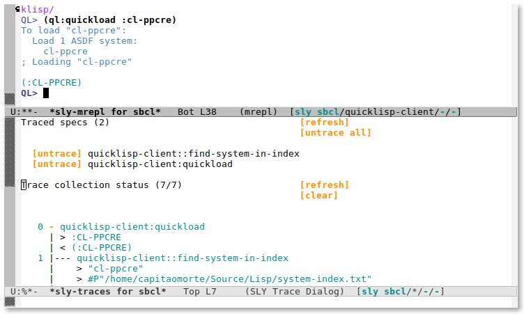
We can later learn more about this mode (see Trace Dialog), but for
now let’s again pretend we expected the function FLEX-SCORE to
return a wildly different score for
COMMON-LISP:DESTRUCTURING-BIND. In that case we should like to
witness said FLEX-SCORE function respond to any implementation
improvements we perform. To do so, it’s useful to be able to surgically
re-run that function with those very same arguments. Let’s do this by
finding the function call in the Trace Dialog window, right-clicking it
with the mouse and selecting “Copy call to REPL”.
Pressing M-S-RET on it should accomplish the same. We are
automatically transported to the REPL again, where the desired function
call has already been typed out for us at the command prompt, awaiting a
confirmation RET, which will run the function call:
; The actual arguments passed to trace 15 "desbind" "COMMON-LISP:DESTRUCTURING-BIND" (12 13 14 26 27 28 29) SLYNK-COMPLETION> (slynk-completion::flex-score #v1:0 #v1:1 #v1:2) 0.003030303 (0.30303028%) SLYNK-COMPLETION>
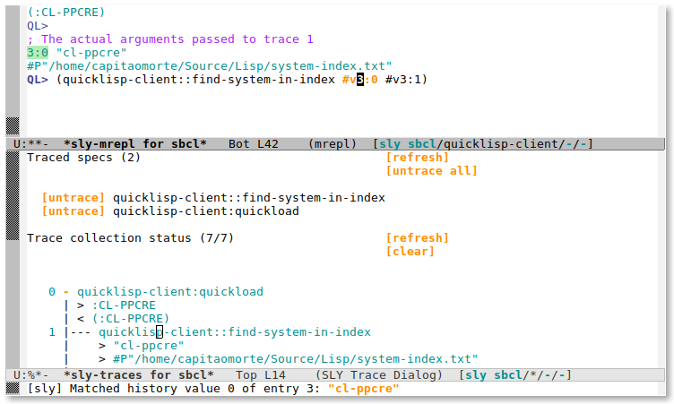
If those #v...’s look odd, here’s what’s going on: to copy the call
to the REPL, SLY first copied over its actual arguments, and then
wrote the function using special backreferences to those
arguments in the correct place. These are the #v4:0
and #v4:1 bits seen at the command prompt. If one puts the
cursor on them or hovers with the mouse, this highlights the
corresponding object a few lines above in the buffer. Later, you can
also try typing “#v” at the REPL to incrementally write your own
backreferences (see REPL backreferences).
For one final demonstration, let’s now suppose say we are still
intrigued by how that function (FLEX-SCORE) works internally. So
let’s navigate to its definition using M-. again (or just open
the slynk-completion.lisp buffer that you probably still have
open). The function’s code might look like this:
(defun flex-score (pattern string indexes)
"Score the match of PATTERN on STRING.
INDEXES as calculated by FLEX-MATCHES"
;; FIXME: hideously naive scoring
(declare (ignore pattern))
(float
(/ 1
(* (length string)
(max 1
(reduce #'+
(loop for (a b) on indexes
while b
collect (- b a 1))))))))
Can this function be working correctly? What do all those expressions
return? Should we reach for good old C-style printf? Let’s try
“stickers” instead. SLY’s stickers are a form of non-intrusive
function instrumentation that work like carefully crafted print
or (format t ...)), but are much easier to work with. You can
later read more about them (see Stickers), but for now you can just
think of them as colorful labels placed on s-exp’s. Let’s place a bunch
here, like this:
flex-score, place your cursor on the first
open parenthesis of that line (the opening parenthesis of the expression
(- b a 1)) and press C-c C-s C-s;
indexes a couple of lines above;
(loop...),
(reduce...), (max...), (length...),
(*...), (/... ) and (float...). You could have
done this in any order, by the way;
Now let’s recompile this definition with C-c C-c. Beside the minibuffer note something about stickers being “armed” our function should now look like a rainbow in blue.
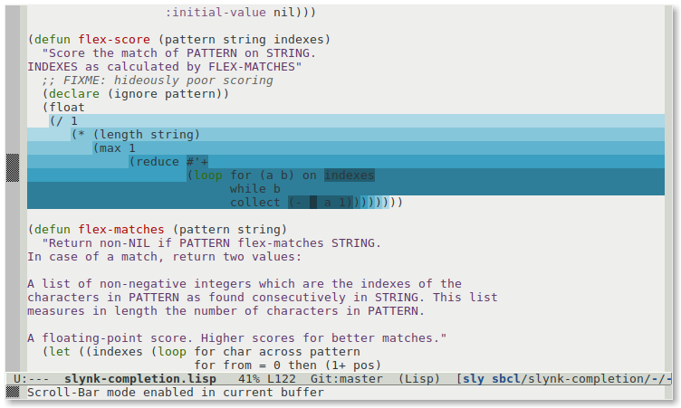
Now we return to the SLY REPL, but this time let’s use C-c ~ (that’s C-c followed by “tilde”) to do so. This syncs the REPL’s local package and local directory to the Lisp file that we’re visiting. This is something not strictly necessary here but generally convenient when hacking on a system, because you can now call functions from the file you came from without package-qualification.
Now, to re-run the newly instrumented function, by calling it with the
same arguments. No need to type all that again, because this REPL
supports reverse history i-search, remember? So just type the
binding C-r and then type something like scor to search
history backwards and arrive at the function call copied to the REPL
earlier. Type RET once to confirm that’s the call your after,
and RET again to evaluate it. Because those #v...
backreferences are still trained specifically on those very same
function arguments, you can be sure that the function call is
equivalent.
We can now use the C-c C-s C-r to replay the sticker
recordings of this last function call. This is a kind of slow
walk-through conducted in separate navigation window
called *sly-stickers-replay* which pops up. There we can see the
Lisp value(s) that each sticker eval’ed to each time (or a note
if it exited non-locally). We can navigate recordings with n and
p, and do the usual things allowed by interactive objects like
inspecting them and returning them to the REPL. If you need help, toggle
help by typing h. There are lots of options here for navigating
stickers, ignoring some stickers, etc. When we’re done in this window,
we press q to quit.
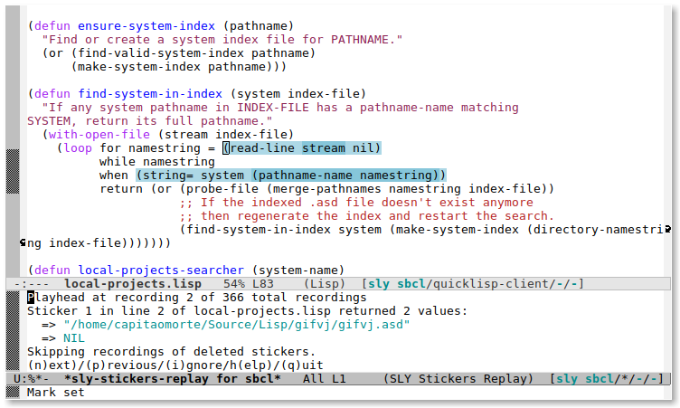
Finally, we declare that we’re finished debugging FLEX-MATCHES.
Even though stickers don’t get saved to the file in any way, we decide
we’re not interested in them anymore. So let’s open the “SLY” menu in
the menu bar, find the “Delete stickers from top-level form” option
under the “Stickers” sub-menu, and click it. Alternatively, we could
have typed C-u C-c C-s C-s.
SLY’s commands when editing a Lisp file are provided via
sly-editing-mode, a minor-mode used in conjunction with Emacs’s
lisp-mode.
This chapter describes SLY’s commands for editing and working in
Lisp source buffers. There are, of course, more SLY’s commands that
also apply to these buffers (see Common functionality), but
with very few exceptions these commands will always be run from
a .lisp file.
These commands each evaluate a Common Lisp expression in a different way. Usually they mimic commands for evaluating Emacs Lisp code. By default they show their results in the echo area, but a prefix argument C-u inserts the results into the current buffer, while a negative prefix argument M-- sends them to the kill ring.
Evaluate the expression before point and show the result in the echo area.
Evaluate the current toplevel form and show the result in the echo area. ‘C-M-x’ treats ‘defvar’ expressions specially. Normally, evaluating a ‘defvar’ expression does nothing if the variable it defines already has a value. But ‘C-M-x’ unconditionally resets the variable to the initial value specified in the ‘defvar’ expression. This special feature is convenient for debugging Lisp programs.
If C-M-x or C-x C-e is given a numeric argument, it inserts the value into the current buffer, rather than displaying it in the echo area.
Evaluate an expression read from the minibuffer.
Evaluate the region.
Evaluate the expression before point and pretty-print the result in a fresh buffer.
Edit the value of a setf-able form in a new buffer *Edit <form>*. The value is inserted into a temporary buffer for editing and then set in Lisp when committed with C-c C-c.
Undefine the function, with fmakunbound, for the symbol at
point.
Remove a specific method of a generic function at point.
SLY has fancy commands for compiling functions, files, and packages. The fancy part is that notes and warnings offered by the Lisp compiler are intercepted and annotated directly onto the corresponding expressions in the Lisp source buffer. (Give it a try to see what this means.)
Compile the top-level form at point. The region blinks shortly to give some feedback which part was chosen.
With (positive) prefix argument the form is compiled with maximal debug settings (C-u C-c C-c). With negative prefix argument it is compiled for speed (M-- C-c C-c). If a numeric argument is passed set debug or speed settings to it depending on its sign.
The code for the region is executed after compilation. In principle, the command writes the region to a file, compiles that file, and loads the resulting code.
This compilation may arm stickers (see Stickers).
Compile and load the current buffer’s source file. If the compilation step fails, the file is not loaded. It’s not always easy to tell whether the compilation failed: occasionally you may end up in the debugger during the load step.
With (positive) prefix argument the file is compiled with maximal debug settings (C-u C-c C-k). With negative prefix argument it is compiled for speed (M-- C-c C-k). If a numeric argument is passed set debug or speed settings to it depending on its sign.
This compilation may arm stickers (see Stickers).
Compile (but don’t load) the current buffer’s source file.
Load a Lisp file. This command uses the Common Lisp LOAD function.
Compile the selected region.
This compilation may arm stickers (see Stickers).
The annotations are indicated as underlining on source forms. The compiler message associated with an annotation can be read either by placing the mouse over the text or with the selection commands below.
Move the point to the next compiler note and displays the note.
Move the point to the previous compiler note and displays the note.
Remove all annotations from the buffer.
Visit the next-error message. This is not actually a SLY command but SLY creates a hidden buffer so that most of the Compilation mode commands (See (emacs)Compilation Mode) work similarly for Lisp as for batch compilers.
SLY automatically shows information about symbols near the point. For
function names the argument list is displayed, and for global
variables, the value. Autodoc is implemented by means
of eldoc-mode of Emacs.
Show the argument list of the function NAME.
Toggles autodoc-mode on or off according to the argument, and toggles the mode when invoked without argument.
Like sly-autodoc, but when called twice, or after sly-autodoc was already automatically called, display multiline arglist.
If sly-autodoc-use-multiline-p is set to non-nil,
allow long autodoc messages to resize echo area display.
autodoc-mode is a SLY extension and can be turned off if you
so wish (see Extensions).
SLY automatically discovers how to indent the macros in your Lisp
system. To do this the Lisp side scans all the macros in the system and
reports to Emacs all the ones with &body arguments. Emacs then
indents these specially, putting the first arguments four spaces in and
the “body” arguments just two spaces, as usual.
This should “just work.” If you are a lucky sort of person you needn’t read the rest of this section.
To simplify the implementation, SLY doesn’t distinguish between macros with the same symbol-name but different packages. This makes it fit nicely with Emacs’s indentation code. However, if you do have several macros with the same symbol-name then they will all be indented the same way, arbitrarily using the style from one of their arglists. You can find out which symbols are involved in collisions with:
(slynk:print-indentation-lossage)
If a collision causes you irritation, don’t have a nervous breakdown,
just override the Elisp symbol’s sly-common-lisp-indent-function
property to your taste. SLY won’t override your custom settings, it
just tries to give you good defaults.
A more subtle issue is that imperfect caching is used for the sake of performance. 1
In an ideal world, Lisp would automatically scan every symbol for indentation changes after each command from Emacs. However, this is too expensive to do every time. Instead Lisp usually just scans the symbols whose home package matches the one used by the Emacs buffer where the request comes from. That is sufficient to pick up the indentation of most interactively-defined macros. To catch the rest we make a full scan of every symbol each time a new Lisp package is created between commands – that takes care of things like new systems being loaded.
You can use M-x sly-update-indentation to force all symbols to be scanned for indentation information.
SLY automatically evaluates reader-conditional expressions, like
#+linux, in source buffers and “grays out” code that will be
skipped for the current Lisp connection.
Macroexpand (or compiler-macroexpand) the expression at point once. If invoked with a prefix argument use macroexpand instead or macroexpand-1 (or compiler-macroexpand instead of compiler-macroexpand-1).
Macroexpand the expression at point once. If invoked with a prefix argument, use macroexpand instead of macroexpand-1.
Fully macroexpand the expression at point.
Display the compiler-macro expansion of sexp at point.
Repeatedly expand compiler macros of sexp at point.
Expand the format-string at point and display it. With prefix arg, or if no string at point, prompt the user for a string to expand.
Within a sly macroexpansion buffer some extra commands are provided (these commands are always available but are only bound to keys in a macroexpansion buffer).
Just like sly-macroexpand-1 but the original form is replaced with the expansion.
The last macroexpansion is performed again, the current contents of the macroexpansion buffer are replaced with the new expansion.
Close the expansion buffer.
Undo last macroexpansion operation.
This chapter describes the commands available throughout
SLY-enabled buffers, which are not only Lisp source buffers, but
every auxiliary buffer created by SLY, such as the REPL,
Inspector, etc (see The REPL and other special buffers) In
general, it’s a good bet that if the buffer’s name starts with
*sly-...*, these commands and functionality will be available
there.
One of the most used keybindings across all of SLY is the familiar M-. binding for sly-edit-definition.
Here’s the gist of it: when pressed with the cursor over a symbol name, that symbol’s name definition is looked up by the Lisp process, thus producing a Lisp source location, which might be a file, or a file-less buffer. For convenience, a type of “breadcrumb” is left behind at the original location where M-. was pressed, so that another keybinding M-, takes the user back to the original location. Thus multiple M-. trace a path through lisp sources that can be traced back with an equal number of M-,.
Go to the definition of the symbol at point.
Go back to the point where M-. was invoked. This gives multi-level backtracking when M-. has been used several times.
Like sly-edit-definition but switches to the other window to
edit the definition in.
Like sly-edit-definition but opens another frame to edit the
definition in.
The behaviour of the M-. binding is sometimes affected by the type of symbol you are giving it.
defun or
defvar.
*sly-xref*
buffer (see Cross-referencing).
Finding and presenting the definition of a function is actually the most elementary aspect of broader cross-referencing facilities framework in SLY. There are other types of questions about the source code relations that you can ask the Lisp process.2
The following keybindings behave much like the M-. keybinding
(see Finding definitions): when pressed as is they make a query
about the symbol at point, but with a C-u prefix argument they
prompt the user for a symbol. Importantly, they always popup a
transient *sly-xref* buffer in a different window.
Find all the references to this symbol, whatever the type of that reference.
Show function callers.
Show all known callees.
Show references to global variable.
Show bindings of a global variable.
Show assignments to a global variable.
Show expansions of a macro.
Show all known methods specialized on a class.
There are two further “List callers/callees” commands that operate by rummaging through function objects on the heap at a low-level to discover the call graph. They are only available with some Lisp systems, and are most useful as a fallback when precise XREF information is unavailable.
List callers of a function.
List callees of a function.
In the resulting *sly-xref* buffer, these commands are
available:
Show definition at point in the other window. Do not leave
the *sly-xref buffer.
Show definition at point in the other window and close
the *sly-xref buffer.
Recompile definition at point. Uses prefix arguments like
sly-compile-defun.
Recompile all definitions. Uses prefix arguments like
sly-compile-defun.
Completion commands are used to complete a symbol or form based on what is already present at point. Emacs has many completion mechanisms that SLY tries to mimic as much as possible.
SLY provides two styles of completion. The choice between them happens in the Emacs customization variable see sly-complete-symbol-function, which can be set to two values, or methods:
sly-flex-completions
This method is speculative. It assumes that the letters you’ve already
typed aren’t necessarily an exact prefix of the symbol you’re thinking
of. Therefore, any possible completion that contains these letters, in
the order that you have typed them, is potentially a match. Completion
matches are then sorted according to a score that should reflect the
probability that you really meant that them.
Flex completion implies that the package-qualification needed to
access some symbols is automatically discovered for you. However, to
avoid searching too many symbols unnecessarily, this method makes some
minimal assumptions that you can override: it assumes, for example,
that you don’t normally want to complete to fully qualified internal
symbols, but will do so if it finds two consecutive colons (::)
in your initial pattern. Similarly, it assumes that if you start a
completion on a word starting :, you must mean a keyword (a
symbol from the keyword package.)
Here are the top results for some typical searches.
CL-USER> (quiloa<TAB>) -> (ql:quickload) CL-USER> (mvbind<TAB>) -> (multiple-value-bind) CL-USER> (scan<TAB>) -> (ppcre:scan) CL-USER> (p::scan<TAB>) -> (ppcre::scanner) CL-USER> (setf locadirs<TAB>) -> (setf ql:*local-project-directories*) CL-USER> foobar -> asdf:monolithic-binary-op
sly-simple-completions
This method uses “classical” completion on an exact prefix. Although
poorer, this is simpler, more predictable and closer to the default
Emacs completion method. You type a prefix for a symbol reference and
SLY let’s you choose from symbols whose beginnings match it
exactly.
As an enhancement in SLY over Emacs’ built-in completion styles,
when the *sly-completions* buffer pops up, some keybindings are
momentarily diverted to it:
Select the next completion.
Select the previous completion.
Choose the currently selected completion and enter it at point.
As soon as the user selects a completion, gives up by pressing
C-g, or moves out of the symbol being completed, the
*sly-completions* buffer is closed.
In many buffers and modes in SLY, there are snippets of text that represent objects “living” in the Lisp process connected to SLY. These regions are known in SLY as interactive values or objects. You can tell these objects from regular text by their distinct “face”, is Emacs parlance for text colour, or decoration. Another way to check if bit of text is an interactive object is to hover above it with the mouse and right-click (<mouse-3>) it: a context menu will appear listing actions that you can take on that object.
Depending on the mode, different actions may be active for different types of objects. Actions can also be invoked using keybindings active only when the cursor is on the button.
Copy the object to the main REPL (see REPL output and see REPL backreferences).
An experimental feature. On some backtrace frames in the Debugger (see The SLY-DB Debugger) and Trace Dialog (see Trace Dialog), copy the object to the main REPL. That’s meta-shift-return, by the way, there’s no capital “S”.
For function symbols, debugger frames, or traced function calls, go to the Lisp source, much like with M-..
For function symbols, debugger frames, or traced function calls, show the Lisp source in another window, but don’t switch to it.
Pretty print the object in a separate buffer, much
like sly-pprint-eval-last-expression.
Inspect the object in a separate inspector buffer (see The Inspector).
Describe the object in a separate buffer using Lisp’s
CL:DESCRIBE.
SLY’s online documentation commands follow the example of Emacs Lisp. The commands all share the common prefix C-c C-d and allow the final key to be modified or unmodified (see Keybindings.)
This command should land you in an electronic version of this very manual that you can read inside Emacs.
Describe the symbol at point.
Describe the function at point.
Perform an apropos search on Lisp symbol names for a regular expression match and display their documentation strings. By default the external symbols of all packages are searched. With a prefix argument you can choose a specific package and whether to include unexported symbols.
Like sly-apropos but also includes internal symbols by default.
Show apropos results of all symbols in a package. This command is for browsing a package at a high-level. With package-name completion it also serves as a rudimentary Smalltalk-ish image-browser.
Lookup the symbol at point in the Common Lisp Hyperspec. This
uses the familiar hyperspec.el to show the appropriate section
in a web browser. The Hyperspec is found either on the Web or in
common-lisp-hyperspec-root, and the browser is selected by
browse-url-browser-function.
Note: this is one case where C-c C-d h is not the same as C-c C-d C-h.
Lookup a format character in the Common Lisp Hyperspec.
Lookup a reader macro in the Common Lisp Hyperspec.
SLY is able to connect to multiple Lisp processes at the same time. The M-x sly command, when invoked with a prefix argument, will offer to create an additional Lisp process if one is already running. This is often convenient, but it requires some understanding to make sure that your SLY commands execute in the Lisp that you expect them to.
Some SLY buffers are tied to specific Lisp processes. It’s easy
read that from the buffer’s name which will usually be
*sly-<something> for <connection>*, where connection is
the name of the connection.
Each Lisp connection has its own main REPL buffer (see The REPL: the “top level”), and all expressions entered or SLY commands invoked in that buffer are sent to the associated connection. Other buffers created by SLY are similarly tied to the connections they originate from, including SLY-DB buffers (see The SLY-DB Debugger), apropos result listings, and so on. These buffers are the result of some interaction with a Lisp process, so commands in them always go back to that same process.
Commands executed in other places, such as sly-mode source
buffers, always use the “default” connection. Usually this is the
most recently established connection, but this can be reassigned via
the “connection list” buffer:
Pop up a buffer listing the established connections.
Switch to the next Lisp connection by cycling through all connections.
Switch to the previous Lisp connection by cycling through all connections.
The buffer displayed by sly-list-connections gives a one-line
summary of each connection. The summary shows the connection’s serial
number, the name of the Lisp implementation, and other details of the
Lisp process. The current “default” connection is indicated with an
asterisk.
The commands available in the connection-list buffer are:
Pop to the REPL buffer of the connection at point.
Make the connection at point the “default” connection. It will then
be used for commands in sly-mode source buffers.
Update the connection list in the buffer.
Quit the connection list (kill buffer, restore window configuration).
Restart the Lisp process for the connection at point.
Connect to a running Slynk server. With prefix argument, asks if all connections should be closed first.
Disconnect all connections.
Abort the current attempt to connect.
Disassemble the function definition of the symbol at point.
Toggle tracing of the function at point. If invoked with a prefix argument, read additional information, like which particular method should be traced.
Untrace all functions.
Interrupt Lisp (send SIGINT).
Restart the inferior-lisp process.
Synchronize the current package and working directory from Emacs to Lisp.
Set the current directory of the Lisp process. This also changes the current directory of the REPL buffer.
Print the current directory of the Lisp process.
Some SLY commands create temporary buffers to display their results. Although these buffers usually have their own special-purpose major-modes, certain conventions are observed throughout.
Temporary buffers can be dismissed by pressing q. This kills the
buffer and restores the window configuration as it was before the
buffer was displayed. Temporary buffers can also be killed with the
usual commands like kill-buffer, in which case the previous
window configuration won’t be restored.
Pressing RET is supposed to “do the most obvious useful thing.” For instance, in an apropos buffer this prints a full description of the symbol at point, and in an XREF buffer it displays the source code for the reference at point. This convention is inherited from Emacs’s own buffers for apropos listings, compilation results, etc.
Temporary buffers containing Lisp symbols use sly-mode in
addition to any special mode of their own. This makes the usual
SLY commands available for describing symbols, looking up
function definitions, and so on.
Initial focus of those “description” buffers depends on the variable
sly-description-autofocus. If nil (the default),
description buffers do not receive focus automatically, and vice
versa.
If the Lisp system supports multi-threading, SLY spawns a new thread for each request, e.g., C-x C-e creates a new thread to evaluate the expression. An exception to this rule are requests from the REPL: all commands entered in the REPL buffer are evaluated in a dedicated REPL thread.
You can see a listing of the threads for the current connection with
the command M-x sly-list-threads, or C-c C-x t. This
pops open a *sly-threads* buffer, where some keybindings to
control threads are active, if you know what you are doing. The most
useful is probably k to kill a thread, but type C-h m in
that buffer to get a full listing.
Some complications arise with multi-threading and special variables.
Non-global special bindings are thread-local, e.g., changing the value
of a let bound special variable in one thread has no effect on the
binding of the variables with the same name in other threads. This
makes it sometimes difficult to change the printer or reader behaviour
for new threads. The variable
slynk:*default-worker-thread-bindings* was introduced for such
situations: instead of modifying the global value of a variable, add a
binding the slynk:*default-worker-thread-bindings*. E.g., with
the following code, new threads will read floating point values as
doubles by default:
(push '(*read-default-float-format* . double-float)
slynk:*default-worker-thread-bindings*).
SLY uses a custom Read-Eval-Print Loop (REPL, also known as a “top level”, or listener):
Switching to the REPL from anywhere in a SLY buffer is a very
common task. One way to do it is to find the *sly-mrepl...*
buffer in Emacs’s buffer list, but there are other ways to reach a
REPL.
Start or select an existing main REPL buffer.
Start a new secondary REPL session, prompting for a nickname.
Go to the REPL, switching package and default directory as
applicable. More precisely the Lisp variables *package* and
*default-pathname-defaults* are affected by the location
where the command was issued. In a specific position of a .lisp
file, for instance the current package and that file’s directory are
chosen.
Evaluate the expression at prompt and return the result.
Indent the current line. If line already indented complete the symbol at point (see Auto-completion). If there is not symbol at point show the argument list of the most recently enclosed function or macro in the minibuffer.
When at the current prompt, fetches previous input from the history, otherwise jumps to the previous interactive value (see Interactive objects) representing a Lisp object.
When at the current prompt, fetches next input from the history, otherwise jumps to the previous interactive value representing a Lisp object.
This regular Emacs keybinding, when invoked at the current REPL prompt, starts a special transient mode turning the prompt into the string “History-isearch backward”. While in this mode, the user can compose a string used to search backwards through history, and reverse the direction of search by pressing C-s. When invoked outside the current REPL prompt, does a normal text search through the buffer contents.
Interrupts the current thread of the inferior-lisp process.
For convenience this function is also bound to C-c C-c.
Jump to the previous interactive value representing a Lisp object.
Jump to the next interactive value representing a Lisp object.
Clear output between current and last REPL prompts, keeping results.
Clear the whole REPL of output and results.
REPLs wouldn’t be much use if they just took user input and didn’t print anything back. In SLY the output printed to the REPL can come from four different places:
*.
In the SLY REPL, in addition to the *, **
and *** special variables, return values can also be accessed
through a special backreference (see REPL backreferences).
*standard-output*, *error-output*
and *trace-output* as a synchronous and direct result of
the evaluation of an expression in the REPL.
*standard-output*, *error-output* and
*trace-output* printed, perhaps asynchronously,
from others threads, for instance. This feature is optional and
controlled by the variable SLYNK:*GLOBALLY-REDIRECT-IO*.
For advanced users, there are some Lisp-side Slynk variables affecting the way Slynk transmits REPL output to SLY.
SLYNK:*GLOBALLY-REDIRECT-IO*This variable controls the global redirection of the the standard
streams (*standard-output*, etc) to the REPL in Emacs. The
default value is :started-from-emacs, which means that
redirection should only take place upon M-x sly invocations.
When t, global redirection happens even for sessions started with
M-x sly-connect, meaning output may be diverted from wherever
you started the Lisp server originally.
When NIL these streams are only temporarily redirected to Emacs
using dynamic bindings while handling requests, meaning you only see
output caused by the commands you issued to the REPL.
Note that *standard-input* is currently never globally redirected
into Emacs, because it can interact badly with the Lisp’s native REPL
by having it try to read from the Emacs one.
Also note that secondary REPLs (those started with sly-mrepl-new) don’t receive any redirected output.
SLYNK:*USE-DEDICATED-OUTPUT-STREAM*This variable controls whether to use a separate socket solely for Lisp to send printed output to Emacs through, which is more efficient than sending the output in protocol messages to Emacs.
The default value is :started-from-emacs, which means that the
socket should only be established upon M-x sly invocations. When
t, it’s established even for sessions started with M-x
sly-connect. When NIL usual protocol messages are used for
sending input to the REPL.
Notice that using a dedicated output stream makes it more difficult to
communicate to a Lisp running on a remote host via SSH
(see Connecting to a remote Lisp). If you connect via M-x
sly-connect, the default :started-from-emacs value should ensure
this isn’t a problem.
SLYNK:*DEDICATED-OUTPUT-STREAM-PORT*When *USE-DEDICATED-OUTPUT-STREAM* is t the stream will
be opened on this port. The default value, 0, means that the
stream will be opened on some random port.
SLYNK:*DEDICATED-OUTPUT-STREAM-BUFFERING*For efficiency, some Lisps backends wait until a certain conditions
are met in a Lisp character stream before flushing that stream’s
contents, thus sending it to the SLY REPL. Be advised that this
sometimes works poorly on some implementations, so it’s probably best
to leave alone. Possible values are nil (no
buffering), t (enable buffering) or :line (enable
buffering on EOL)
In a regular Lisp REPL, the objects produced by evaluating expressions
at the command prompt can usually be referenced in future commands
using the special variables *, ** and ***. This
is also true of the SLY REPL, but it also provides a different
way to re-conjure these objects through a special Lisp reader macro
character available only in the REPL. The macro character, which
is #v by default takes, in a terse syntax, two indexes
specifying the precise objects in all of the SLY REPL’s recorded
history.
Consider this fragment of a REPL session:
; Cleared REPL history CL-USER> (values 'a 'b 'c) A B C CL-USER> (list #v0) (A) CL-USER> (list #v0:1 #v0:2) (B C) CL-USER> (append #v1:0 #v2:0) (A B C) CL-USER>
Admittedly, while useful, this doesn’t seem terribly easy to use at first sight. There are a couple of reasons, however, that should make it worth considering:
As soon as the SLY REPL detects that you have pressed #v,
all the REPL results that can possibly be referenced are
temporarily annotated on their left with two special numbers. These
numbers are in the syntax accepted by the #v macro-character,
namely #vENTRY-IDX:VALUE-IDX.
Furthermore, as soon as you type a number for ENTRY-IDX, only
that entries values remain highlighted. Then, as you finish the entry
with VALUE-IDX, only that exact object remains highlighted. If
you make a mistake (say, by typing a letter or an invalid number)
while composing #v syntax, SLY lets you know by painting the
backreference red.
Highlighting also happens when you place the cursor over existing
valid #v expressions.
An experimental feature in SLY allows copying function calls to the REPL from the Debugger (see The SLY-DB Debugger) and the Trace Dialog (see Trace Dialog). In those buffers, pressing keybinding M-S-RET over objects that represent function calls will copy the call, and not the object, to the REPL. This works by first copying over the argument objects in order to the REPL results, and then composing an input line that includes the called function’s name and backreferences to those arguments (see REPL backreferences).
Naturally, this call isn’t exactly the same because it doesn’t evaluate in the same dynamic environment as the original one. But it’s a useful debug technique because backreferences are stable 3, so repeating that very same function call with the very same arguments is just a matter of textually copying the previous expression into the command prompt, no matter how far ago it happened. And that, in turn, is as easy as using C-r and some characters (see REPL commands) to arrive and repeat the desired REPL history entry.
The SLY inspector is a Emacs-based alternative to the
standard INSPECT function. The inspector presents objects in
Emacs buffers using a combination of plain text, hyperlinks to related
objects.
The inspector can easily be specialized for the objects in your own
programs. For details see the inspect-for-emacs generic
function in slynk-backend.lisp.
Inspect the value of an expression entered in the minibuffer.
The standard commands available in the inspector are:
If point is on a value then recursively call the inspector on that value. If point is on an action then call that action.
Describe the slot at point.
Evaluate an expression in the context of the inspected object. The
variable * will be bound to the inspected object.
Toggle between verbose and terse mode. Default is determined by ‘slynk:*inspector-verbose*’.
Go back to the previous object (return from RET).
The inverse of l. Also bound to SPC.
Reinspect.
Show the previously inspected objects.
Dismiss the inspector buffer.
Fetch all inspector contents and go to the end.
Store the value under point in the variable ‘*’. This can then be used to access the object in the REPL.
Jump to the next and previous inspectable object respectively.
SLY has a custom Emacs-based debugger called SLY-DB. Conditions
signalled in the Lisp system invoke SLY-DB in Emacs by way of the
Lisp *DEBUGGER-HOOK*.
SLY-DB pops up a buffer when a condition is signalled. The buffer displays a description of the condition, a list of restarts, and a backtrace. Commands are offered for invoking restarts, examining the backtrace, and poking around in stack frames.
Commands for examining the stack frame at point.
Toggle display of local variables and CATCH tags.
View the frame’s current source expression. The expression is presented in the Lisp source file’s buffer.
Evaluate an expression in the frame. The expression can refer to the available local variables in the frame.
Evaluate an expression in the frame and pretty-print the result in a temporary buffer.
Disassemble the frame’s function. Includes information such as the instruction pointer within the frame.
Inspect the result of evaluating an expression in the frame.
Recompile frame. C-u C-c C-c for recompiling with maximum debug settings.
Invoke the ABORT restart.
“Quit” – For SLY evaluation requests, invoke a restart which restores to a known program state. For errors in other threads, See *SLY-DB-QUIT-RESTART*.
Invoke the CONTINUE restart.
Invoke a restart by number.
Restarts can also be invoked by pressing RET or Mouse-2 on them in the buffer.
Restart execution of the frame with the same arguments it was originally called with. (This command is not available in all implementations.)
Return from the frame with a value entered in the minibuffer. (This command is not available in all implementations.)
Exit SLY-DB and debug the condition using the Lisp system’s default debugger.
Inspect the condition currently being debugged.
Evaluate an expression entered in the minibuffer.
Attach debugger (e.g. gdb) to the current lisp process.
The SLY Trace Dialog, in package sly-trace-dialog, is a
tracing facility, similar to Common Lisp’s trace, but
interactive rather than purely textual.
You use it just like you would regular trace: after tracing a
function, calling it causes interesting information about that
particular call to be reported.
However, instead of printing the trace results to the
the *trace-output* stream (usually the REPL), the SLY Trace
Dialog collects and stores them in your Lisp environment until, on
user’s request, they are fetched into Emacs and displayed in a
dialog-like interactive view.
After starting up SLY, SLY’s Trace Dialog installs
a Trace menu in the menu-bar of any sly-mode buffer and
adds two new commands, with respective key-bindings:
If point is on a symbol name, toggle tracing of its function definition. If point is not on a symbol, prompt user for a function.
With a C-u prefix argument, and if your lisp implementation allows it, attempt to decipher lambdas, methods and other complicated function signatures.
The function is traced for the SLY Trace Dialog only, i.e. it is
not found in the list returned by Common Lisp’s trace.
Pop to the interactive Trace Dialog buffer associated with the current connection (see Multiple connections).
Consider the (useless) program:
(defun foo (n) (if (plusp n) (* n (bar (1- n))) 1)) (defun bar (n) (if (plusp n) (* n (foo (1- n))) 1))
After tracing both foo and bar with C-c M-t,
calling call (foo 2) and moving to the trace dialog with
C-c T, we are presented with this buffer.
Traced specs (2) [refresh]
[untrace all]
[untrace] common-lisp-user::bar
[untrace] common-lisp-user::foo
Trace collection status (3/3) [refresh]
[clear]
0 - common-lisp-user::foo
| > 2
| < 2
1 `--- common-lisp-user::bar
| > 1
| < 1
2 `-- common-lisp-user::foo
> 0
< 1
The dialog is divided into sections displaying the functions already traced, the trace collection progress and the actual trace tree that follow your program’s logic. The most important key-bindings in this buffer are:
Update information on the trace collection and traced specs.
Fetch the next batch of outstanding (not fetched yet) traces. With a C-u prefix argument, repeat until no more outstanding traces.
Prompt for confirmation, then clear all traces, both fetched and outstanding.
The arguments and return values below each entry are interactive
buttons. Clicking them opens the inspector
(see The Inspector). Invoking M-RET
(sly-trace-dialog-copy-down-to-repl) returns them to the REPL
for manipulation (see The REPL: the “top level”). The number left of each entry
indicates its absolute position in the calling order, which might
differ from display order in case multiple threads call the same
traced function.
sly-trace-dialog-hide-details-mode hides arguments and return
values so you can concentrate on the calling logic. Additionally,
sly-trace-dialog-autofollow-mode will automatically
display additional detail about an entry when the cursor moves over
it.
SLY Stickers, implemented as the sly-stickers contrib
(see Extensions), is a tool for “live” code annotations. It’s an
alternative to the print or break statements you add to
your code when debugging.
Contrary to these techniques, “stickers” are non-intrusive, meaning that saving your file doesn’t save your debug code along with it.
Here’s the general workflow:
M-x
sly-stickers-dwim places a sticker on any Lisp form. Stickers can
exist inside other stickers.
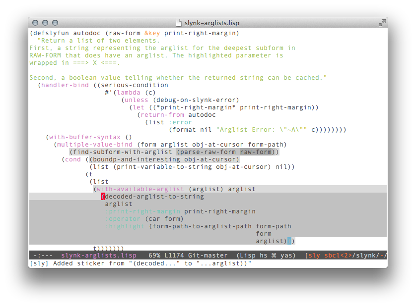
M-x sly-compile-defun) or C-c C-k
(M-x sly-compile-file) commands. An armed sticker changes color from
the default grey background to a blue background.
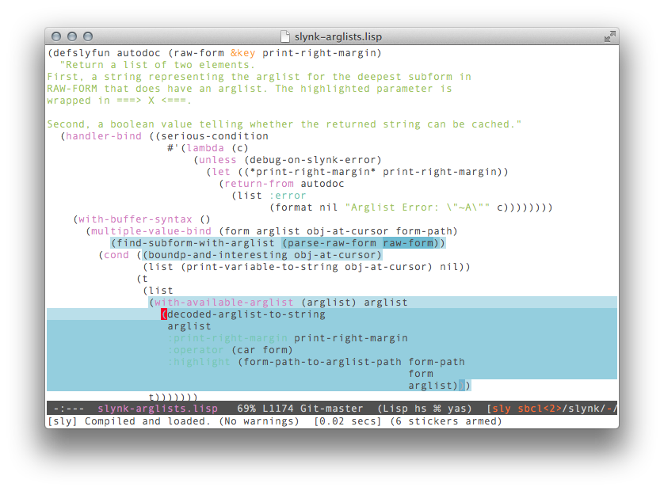
From this point on, when the Lisp code is executed, the results of evaluating the underlying forms are captured in the Lisp side. Stickers help you examine your program’s behaviour in three ways:
M-x sly-stickers-replay) interactively walks the user
through recordings in the order that they occurred. In the
created *sly-stickers-replay* buffer, type h for a list
of keybindings active in that buffer.
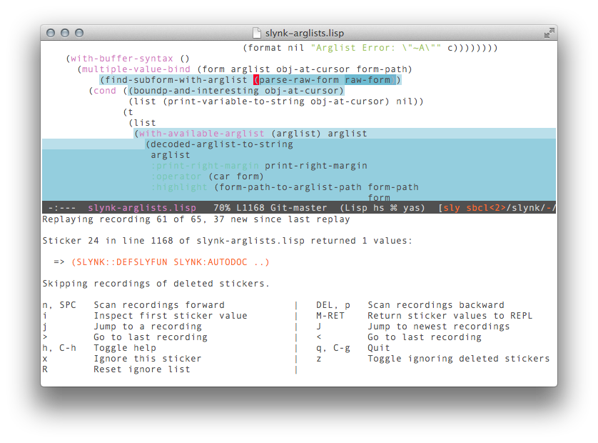
M-x
sly-stickers-toggle-break-on-stickers. Whenever a sticker-covered
expression is reached, the debugger comes up with useful restarts and
interactive for the values produced. You can tweak this behaviour by
setting the Lisp-side variable
SLYNK-STICKERS:*BREAK-ON-STICKERS* to a list with the
elements :before and :after, making SLY break before a
sticker, after it, or both.
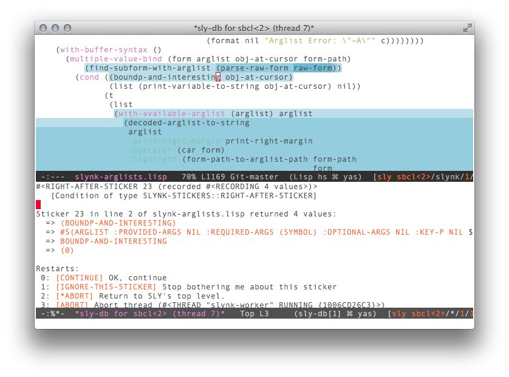
M-x sly-stickers-fetch) populates the sticker
overlay with the latest captured results, called “recordings”. If a sticker
has captured any recordings, it will turn green, otherwise it will turn
red. A sticker whose Lisp expression has caused a non-local exit, will
be also be marked with a special face.
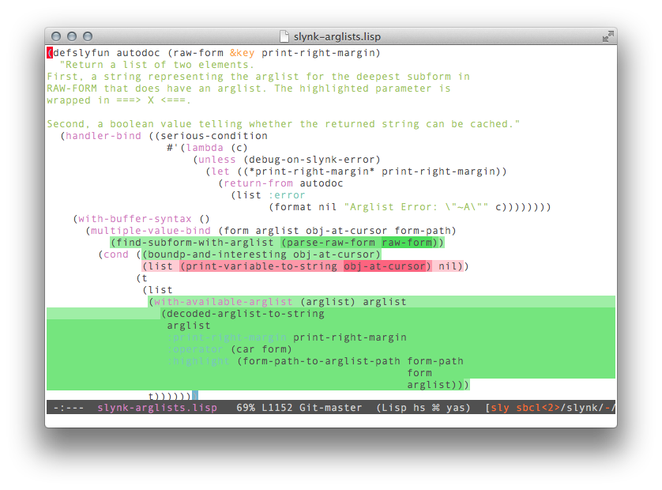
At any point, stickers can be removed with the
same sly-stickers-dwim keybinding, by placing the cursor at the
beginning of a sticker. Additionally adding prefix arguments
to sly-stickers-dwim increase its scope, so C-u C-c C-s
C-s will remove all stickers from the current function and C-u
C-u C-c C-s C-s will remove all stickers from the current file.
Stickers can be nested inside other stickers, so it is possible to record the value of an expression inside another expression which is also annotated.
Stickers are interactive parts just like any other part in SLY that
represents Lisp-side objects, so they can be inspected and returned to
the REPL, for example. To move through the stickers with the keyboard
use the existing keybindings to move through compilation
notes (M-p and M-n) or use C-c C-s p and C-c C-s
n (sly-stickers-prev-sticker and
sly-stickers-next-sticker).
There are some caveats when using SLY Stickers:
let variable bindings, or
other constructs) are rejected, though the function is still compiled as
usual. To let the user know about this, these stickers remain grey, and are
marked as “disarmed”. A message also appears in the echo area.
In general we try to make our key bindings fit with the overall Emacs style.
We never bind C-h anywhere in a key sequence. This is because Emacs has a built-in default so that typing a prefix followed by C-h will display all bindings starting with that prefix, so C-c C-d C-h will actually list the bindings for all documentation commands. This feature is just a bit too useful to clobber!
“Are you deliberately spiting Emacs’s brilliant online help facilities? The gods will be angry!”
This is a brilliant piece of advice. The Emacs online help facilities are your most immediate, up-to-date and complete resource for keybinding information. They are your friends:
describe-key
“What does this key do?”
Describes current function bound to <key> for focus buffer.
describe-bindings
“Exactly what bindings are available?”
Lists the current key-bindings for the focus buffer.
describe-mode
“Tell me all about this mode”
Shows all the available major mode keys, then the minor mode keys, for
the modes of the focus buffer.
view-lossage
“Woah, what key chord did I just do?”
Shows you the literal sequence of keys you’ve pressed in order.
For example, you can add one of the following to your Emacs init file (usually ~/.emacs or ~/.emacs.d/init.el, but see Emacs Init File in The Emacs Manual).
(eval-after-load 'sly `(define-key sly-prefix-map (kbd "M-h") 'sly-documentation-lookup))
SLY comes bundled with many extensions (called “contribs” for historical reasons, see Extensions) which you can customize just like SLY’s code. To make C-c C-k clear the last REPL prompt’s output, for example, use
(eval-after-load 'sly-mrepl
`(define-key sly-mrepl-mode-map (kbd "C-c C-k")
'sly-mrepl-clear-recent-output))
Emacs’s keybindings “live” in keymap variables. To customize a particular binding and keep it from trampling on other important keys you should do it in one of SLY’s keymaps. The following non-exhaustive list of SLY-related keymaps is just a reference: the manual will go over each associated functionality in detail.
sly-doc-mapKeymap for documentation commands (see Documentation commands) in SLY-related buffers, accessible by the C-c C-d prefix.
sly-who-mapKeymap for cross-referencing (“who-calls”) commands (see Cross-referencing) in SLY-related buffers, accessible by the C-c C-w prefix.
sly-selector-mapA keymap for SLY-related functionality that should be available in globally in all Emacs buffers (not just SLY-related buffers).
sly-mode-mapA keymap for functionality available in all SLY-related buffers.
sly-editing-mode-mapA keymap for SLY functionality available in Lisp source files.
sly-popup-buffer-mode-mapA keymap for functionality available in the temporary “popup” buffers that SLY displays (see Temporary buffers)
sly-apropos-mode-mapA keymap for functionality available in the temporary SLY “apropos” buffers (see Documentation commands).
sly-xref-mode-mapA keymap for functionality available in the temporary xref
buffers used by cross-referencing commands
(see Cross-referencing).
sly-macroexpansion-minor-mode-mapA keymap for functionality available in the temporary buffers used for macroexpansion presentation (see Macro-expansion commands).
sly-db-mode-mapA keymap for functionality available in the debugger buffers used to debug errors in the Lisp process (see The SLY-DB Debugger).
sly-thread-control-mode-mapA keymap for functionality available in the SLY buffers dedicated to controlling Lisp threads (see Multi-threading).
sly-connection-list-mode-mapA keymap for functionality available in the SLY buffers dedicated to managing multiple Lisp connections (see Multiple connections).
sly-inspector-mode-mapA keymap for functionality available in the SLY buffers dedicated to inspecting Lisp objects (see The Inspector).
sly-mrepl-mode-mapA keymap for functionality available in SLY’s REPL buffers (see The REPL: the “top level”).
sly-trace-dialog-mode-mapA keymap for functionality available in SLY’s “Trace Dialog” buffers (see Trace Dialog).
The Emacs part of SLY can be configured with the Emacs
customize system, just use M-x customize-group sly
RET. Because the customize system is self-describing, we only cover a
few important or obscure configuration options here in the manual.
sly-truncate-linesThe value to use for truncate-lines in line-by-line summary
buffers popped up by SLY. This is t by default, which
ensures that lines do not wrap in backtraces, apropos listings, and so
on. It can however cause information to spill off the screen.
sly-complete-symbol-functionThe function to use for completion of Lisp symbols. Two completion
styles are available: sly-simple-completions
and sly-flex-completions (see Auto-completion).
sly-filename-translationsThis variable controls filename translation between Emacs and the Lisp system. It is useful if you run Emacs and Lisp on separate machines which don’t share a common file system or if they share the filesystem but have different layouts, as is the case with SMB-based file sharing.
sly-net-coding-system ¶If you want to transmit Unicode characters between Emacs and the Lisp system, you should customize this variable. E.g., if you use SBCL, you can set:
(setq sly-net-coding-system 'utf-8-unix)
To actually display Unicode characters you also need appropriate
fonts, otherwise the characters will be rendered as hollow boxes. If
you are using Allegro CL and GNU Emacs, you can also
use emacs-mule-unix as coding system. GNU Emacs has often
nicer fonts for the latter encoding. (Different encodings can be used
for different Lisps, see Multiple Lisps.)
sly-keep-buffers-on-connection-closeThis variable holds a list of keywords indicating SLY buffer types
that should be kept around when a connection closes. For example, if
the variable’s value includes :mrepl (which is the default),
REPL buffer is kept around while all other stale buffers (debugger,
inspector, etc..) are automatically killed.
The following customization variables affect the behaviour of the REPL (see The REPL: the “top level”):
sly-mrepl-shortcutThe key to use to trigger the REPL’s “comma shortcut”. We recommend
you keep the default setting which is the comma (,) key, since
there’s special logic in the REPL to discern if you’re typing a comma
inside a backquoted list or not.
sly-mrepl-prompt-formatterHolds a function that can be set from your Emacs init file
(see Emacs Init File in The Emacs Manual)
to change the way the prompt is rendered. It takes a number of
arguments describing the prompt and should return a propertized Elisp
string. See the default value, sly-mrepl-default-prompt, for how
to implement such a prompt.
sly-mrepl-history-file-nameHolds a string designating the file to use for keeping the shared REPL
histories persistently. The default is to use a hidden file
named .sly-mrepl-history in the user’s home directory.
sly-mrepl-prevent-duplicate-historyA symbol. If non-nil, prevent duplicate entries in input history. If
the non-nil value is the symbol move, the previously occuring
entry is moved to a more recent spot.
sly-mrepl-eli-like-history-navigationIf non-NIL, navigate history like in ELI, Franz’s Common Lisp IDE for Emacs.
sly-mode-hookThis hook is run each time a buffer enters sly-mode. It is
most useful for setting buffer-local configuration in your Lisp source
buffers. An example use is to enable sly-autodoc-mode
(see Autodoc).
sly-connected-hookThis hook is run when SLY establishes a connection to a Lisp server. An example use is to pop to a new REPL.
sly-db-hookThis hook is run after SLY-DB is invoked. The hook functions are
called from the SLY-DB buffer after it is initialized. An example use
is to add sly-db-print-condition to this hook, which makes all
conditions debugged with SLY-DB be recorded in the REPL buffer.
The Lisp server side of SLY (known as “Slynk”) offers several variables to configure. The initialization file ~/.slynk.lisp is automatically evaluated at startup and can be used to set these variables.
The most important configurable is SLYNK:*COMMUNICATION-STYLE*,
which specifies the mechanism by which Lisp reads and processes
protocol messages from Emacs. The choice of communication style has a
global influence on SLY’s operation.
The available communication styles are:
NILThis style simply loops reading input from the communication socket and serves SLY protocol events as they arise. The simplicity means that the Lisp cannot do any other processing while under SLY’s control.
:FD-HANDLERThis style uses the classical Unix-style “select()-loop.”
Slynk registers the communication socket with an event-dispatching
framework (such as SERVE-EVENT in CMUCL and
SBCL) and receives a callback when data is available. In
this style requests from Emacs are only detected and processed when
Lisp enters the event-loop. This style is simple and predictable.
:SIGIOThis style uses signal-driven I/O with a SIGIO signal
handler. Lisp receives requests from Emacs along with a signal,
causing it to interrupt whatever it is doing to serve the
request. This style has the advantage of responsiveness, since Emacs
can perform operations in Lisp even while it is busy doing other
things. It also allows Emacs to issue requests concurrently, e.g. to
send one long-running request (like compilation) and then interrupt
that with several short requests before it completes. The
disadvantages are that it may conflict with other uses of SIGIO
by Lisp code, and it may cause untold havoc by interrupting Lisp at an
awkward moment.
:SPAWNThis style uses multiprocessing support in the Lisp system to execute
each request in a separate thread. This style has similar properties
to :SIGIO, but it does not use signals and all requests issued
by Emacs can be executed in parallel.
The default request handling style is chosen according to the
capabilities of your Lisp system. The general order of preference is
:SPAWN, then :SIGIO, then :FD-HANDLER, with
NIL as a last resort. You can check the default style by
calling SLYNK-BACKEND::PREFERRED-COMMUNICATION-STYLE. You can
also override the default by setting
SLYNK:*COMMUNICATION-STYLE* in your Slynk init file (see Lisp-side (Slynk)).
These Lisp variables can be configured via your ~/.slynk.lisp file:
SLYNK:*CONFIGURE-EMACS-INDENTATION*This variable controls whether indentation styles for
&body-arguments in macros are discovered and sent to Emacs. It
is enabled by default.
SLYNK:*GLOBAL-DEBUGGER*When true (the default) this causes *DEBUGGER-HOOK* to be
globally set to SLYNK:SLYNK-DEBUGGER-HOOK and thus for SLY
to handle all debugging in the Lisp image. This is for debugging
multithreaded and callback-driven applications.
SLYNK:*SLY-DB-QUIT-RESTART*This variable names the restart that is invoked when pressing q
(see sly-db-quit) in SLY-DB. For SLY evaluation requests this
is unconditionally bound to a restart that returns to a safe
point. This variable is supposed to customize what q does if an
application’s thread lands into the debugger (see
SLYNK:*GLOBAL-DEBUGGER*).
(setf slynk:*sly-db-quit-restart* 'sb-thread:terminate-thread)
SLYNK:*BACKTRACE-PRINTER-BINDINGS*SLYNK:*MACROEXPAND-PRINTER-BINDINGS*SLYNK:*SLY-DB-PRINTER-BINDINGS*SLYNK:*SLYNK-PPRINT-BINDINGS*These variables can be used to customize the printer in various situations. The values of the variables are association lists of printer variable names with the corresponding value. E.g., to enable the pretty printer for formatting backtraces in SLY-DB, you can use:
(push '(*print-pretty* . t) slynk:*sly-db-printer-bindings*).
The fact that most SLY output (in the REPL for instance,
see The REPL: the “top level”) uses SLYNK:*SLYNK-PPRINT-BINDINGS* may surprise you
if you expected it to use a global setting for, say,
*PRINT-LENGTH*. The rationale for this decision is that output
is a very basic feature of SLY, and it should keep operating normally
even if you (mistakenly) set absurd values for some *PRINT-...*
variable. You, of course, override this protection:
(setq slynk:*slynk-pprint-bindings*
(delete '*print-length*
slynk:*slynk-pprint-bindings* :key #'car))
SLYNK:*STRING-ELISION-LENGTH*SLYNK:*STRING-ELISION-LENGTH*This variable controls the maximum length of strings before their pretty
printed representation in the Inspector, Debugger, REPL, etc is elided.
Don’t set this variable directly, create a binding for this variable
in SLYNK:*SLYNK-PPRINT-BINDINGS* instead.
SLYNK:*ECHO-NUMBER-ALIST*SLYNK:*PRESENT-NUMBER-ALIST*These variables hold function designators used for displaying numbers when SLY presents them in its interface.
The difference between the two functions is that
*PRESENT-NUMBER-ALIST*, if non-nil,
overrides *ECHO-NUMBER-ALIST* in the context of the REPL, Trace
Dialog and Stickers (see The REPL: the “top level”, Trace Dialog and
Stickers), while the latter is used for commands like C-x
C-e or the inspector (see Evaluating code, The Inspector).
If in doubt, use *ECHO-NUMBER-ALIST*.
Both variables have the same structure: each element in the alist takes
the form (TYPE . FUNCTIONS), where TYPE is a type designator
and FUNCTIONS is a list of function designators for displaying
that number in SLY. Each function takes the number as a single argument
and returns a string, or nil, if that particular representation is to be
disregarded.
Additionally if a given function chooses to return t as its
optional second value, then all the remaining functions following it
in the list are disregarded.
For integer numbers, the default value of this variable holds function designators that echo an integer number in its binary, hexadecimal and octal representation. However, if your application is using integers to represent Unix Epoch Times you can use this function to display a human-readable time whenever you evaluate an integer.
(defparameter *day-names* '("Monday" "Tuesday" "Wednesday"
"Thursday" "Friday" "Saturday"
"Sunday"))
(defun fancy-unix-epoch-time (integer)
"Format INTEGER as a Unix Epoch Time if within 10 years from now."
(let ((now (get-universal-time))
(tenyears (encode-universal-time 0 0 0 1 1 1910 0))
(unix-to-universal
(+ integer
(encode-universal-time 0 0 0 1 1 1970 0))))
(when (< (- now tenyears) unix-to-universal (+ now tenyears))
(multiple-value-bind
(second minute hour date month year day-of-week dst-p tz)
(decode-universal-time unix-to-universal)
(declare (ignore dst-p))
(format nil "~2,'0d:~2,'0d:~2,'0d on ~a, ~d/~2,'0d/~d (GMT~@d)"
hour minute second (nth day-of-week *day-names*)
month date year (- tz))))))
(pushnew 'fancy-unix-epoch-time
(cdr (assoc 'integer slynk:*echo-number-alist*)))
42 ; => 42 (6 bits, #x2A, #o52, #b101010)
1451404675 ; => 1451404675 (15:57:55 on Tuesday, 12/29/2015 (GMT+0), 31 bits, #x5682AD83)
SLYNK-APROPOS:*PREFERRED-APROPOS-MATCHER*This variable holds a function used for performing apropos searches. It
defaults to SLYNK-APROPOS:MAKE-FLEX-MATCHER, but can also be set
to SLYNK-APROPOS:MAKE-CL-PPCRE-MATCHER (to use a regex-able
matcher) or SLYNK-APROPOS:MAKE-PLAIN-MATCHER, for example.
SLYNK:*LOG-EVENTS*Setting this variable to t causes all protocol messages
exchanged with Emacs to be printed to *TERMINAL-IO*. This is
useful for low-level debugging and for observing how SLY works
“on the wire.” The output of *TERMINAL-IO* can be found in
your Lisp system’s own listener, usually in the buffer
*inferior-lisp*.
One of the advantages of the way SLY is implemented is that we can
easily run the Emacs side (sly.el and friends) on one machine
and the Lisp backend (Slynk) on another. The basic idea is to start up
Lisp on the remote machine, load Slynk and wait for incoming SLY
connections. On the local machine we start up Emacs and tell SLY to
connect to the remote machine. The details are a bit messier but the
underlying idea is that simple.
The easiest way to load Slynk “standalone” (i.e. without
having M-x sly start a Lisp that is subsidiary to a particular
Emacs), is to load the ASDF system definition for Slynk.
Make sure the path to the directory containing Slynk’s .asd
file is in ASDF:*CENTRAL-REGISTRY*. This file lives in
the slynk subdirectory of SLY. Type:
(push #p"/path/to/sly/slynk/" ASDF:*CENTRAL-REGISTRY*) (asdf:require-system :slynk)
inside a running Lisp image4.
Now all we need to do is startup our Slynk server. A working example uses the default settings:
(slynk:create-server)
This creates a “one-connection-only” server on port 4005 using the
preferred communication style for your Lisp system. The following
parameters to slynk:create-server can be used to change that
behaviour:
:PORTPort number for the server to listen on (default: 4005).
:DONT-CLOSEBoolean indicating if the server will continue to accept connections
after the first one (default: NIL). For “long-running” Lisp processes
to which you want to be able to connect from time to time,
specify :dont-close t
:STYLESee Communication style.
:INTERFACENetwork interface to listen on (default: "localhost"). If
this is a pathname, the server listens on a socket file at that path
instead of a TCP port, and :PORT is ignored. Who can connect
is then decided by the file’s permissions. Only some Lisps support
this (currently SBCL, not on Windows).
:MODEAccess mode of that socket file (default: #o600, meaning only
the Lisp’s own user can connect). NIL leaves it to the umask.
So a more complete example will be
(slynk:create-server :port 4006 :dont-close t)
Finally, since section we’re going to be tunneling our connection via SSH5 we’ll only have one port open we must tell Slynk’s REPL contrib (see REPL) to not use an extra connection for output, which it will do by default.
(setf slynk:*use-dedicated-output-stream* nil)
Now we need to create the tunnel between the local machine and the remote machine. Assuming a UNIX command-line, this can be done with:
ssh -L4005:localhost:4005 youruser@remote.example.com
This incantation creates a SSH tunnel between the port 4005 on our
local machine and the port 4005 on the remote machine,
where youruser is expected to have an account. Why 4005?
Well, by default Slynk listens for incoming connections on that port.
Had we passed a :port parameter to slynk:create-server
we’d be using that port number instead.
Don’t like ports? You can make some servers on some Lisp
implementations listen on a socket file, as in
(slynk:create-server :interface #p"/path/to/slynk.sock"). In
that case forward the local port to that file instead:
ssh -L4005:/path/to/slynk.sock youruser@remote.example.com
Finally we start SLY with sly-connect instead of the usual
sly:
M-x sly-connect RET RET
The RET RET sequence just means that we want to use the default
host (localhost) and the default port (4005). Even
though we’re connecting to a remote machine the SSH tunnel fools Emacs
into thinking it’s actually localhost.
One of the main problems with running slynk remotely is that Emacs
assumes the files can be found using normal filenames. if we want
things like sly-compile-and-load-file (C-c C-k) and
sly-edit-definition (M-.) to work correctly we need to
find a way to let our local Emacs refer to remote files.
There are, mainly, two ways to do this. The first is to mount, using
NFS or similar, the remote machine’s hard disk on the local machine’s
file system in such a fashion that a filename like
/opt/project/source.lisp refers to the same file on both
machines. Unfortunately NFS is usually slow, often buggy, and not
always feasible. Fortunately we have an ssh connection and Emacs’
tramp-mode can do the rest.
(See TRAMP User Manual.)
What we do is teach Emacs how to take a filename on the remote machine
and translate it into something that tramp can understand and access
(and vice versa). Assuming the remote machine’s host name is
remote.example.com, cl:machine-instance returns
“remote” and we login as the user “user” we can use sly-tramp
contrib to setup the proper translations by simply doing:
(add-to-list 'sly-filename-translations
(sly-create-filename-translator
:machine-instance "remote"
:remote-host "remote.example.com"
:username "user"))
In this section, a technique to load Slynk faster on Steel Bank Common Lisp (SBCL) is presented. Similar setups should also work for other Lisp implementations.
A pre-canned solution that automates this technique was developed by Pierre Neidhardt.
For SBCL, we recommend that you create a custom core file with socket support and POSIX bindings included because those modules take the most time to load. To create such a core, execute the following steps:
shell$ sbcl * (mapc 'require '(sb-bsd-sockets sb-posix sb-introspect sb-cltl2 asdf)) * (save-lisp-and-die "sbcl.core-for-sly")
After that, add something like this to your ~/.emacs or ~/.emacs.d/init.el (see Emacs Init File):
(setq sly-lisp-implementations '((sbcl ("sbcl" "--core"
"sbcl.core-for-sly"))))
For maximum startup speed you can include the Slynk server directly in a core file. The disadvantage of this approach is that the setup is a bit more involved and that you need to create a new core file when you want to update SLY or SBCL. The steps to execute are:
shell$ sbcl * (load ".../sly/slynk-loader.lisp") * (slynk-loader:dump-image "sbcl.core-with-slynk")
Then add this to the Emacs initializion file:
(setq sly-lisp-implementations
'((sbcl ("sbcl" "--core" "sbcl.core-with-slynk")
:init (lambda (port-file _)
(format "(slynk:start-server %S)\n" port-file)))))
To make SLY connect to your lisp whenever you open a lisp file just add this to your ~/.emacs or ~/.emacs.d/init.el (see Emacs Init File):
(add-hook 'sly-mode-hook
(lambda ()
(unless (sly-connected-p)
(save-excursion (sly)))))
When developing Common Lisp video games or graphical applications, a REPL (see The REPL: the “top level”) is just as useful as anywhere else. But it is often the case that one needs to control exactly the timing of REPL requests and ensure they do not interfere with the “game loop”. In other situations, the choice of communication style (see Communication style) to the Slynk server may invalidate simultaneous multi-threaded operation of REPL and game loop.
Instead of giving up on the REPL or using a complicated solution, SLY’s
REPL can be built into your game loop by using a couple of Slynk Common
Lisp functions, SLYNK-MREPL:SEND-PROMPT and
SLYNK:PROCESS-REQUESTS.
(defun my-repl-aware-game-loop ()
(loop initially
(princ "Starting our game")
(slynk-mrepl:send-prompt)
for i from 0
do (with-simple-restart (abort "Skip rest of this game loop iteration")
(when (zerop (mod i 10))
(fresh-line)
(princ "doing high-priority 3D game loop stuff"))
(sleep 0.1)
;; When you're ready to serve a potential waiting
;; REPL request, just do this non-blocking thing:
(with-simple-restart (abort "Abort this game REPL evaluation")
(slynk:process-requests t)))))
Note that this function is to be called from the REPL, and will
enter kind of “sub-REPL” inside it. It’ll likely “just work” in
this situation. However, if you need you need to call this from
anywhere else (like, say, another thread), you must additionally arrange
for the variable SLYNK-API:*CHANNEL* to be bound to the value it
is bound to in whatever SLY REPL you wish to interact with your game.
If your application has a non-SLY, non-Emacs user interface (graphical
or otherwise), you can use it to exert some control over SLY
functionality, such as its REPL (see The REPL: the “top level”) and inspector
(see The Inspector). This requires that you first set, in Emacs,
variable sly-enable-evaluate-in-emacs to non-nil. As the name
suggests, it lets outside Slynk servers evaluate code in your Elisp
runtime. It is set to nil by default for security purposes.
Once you’ve done that, you can
call SLYNK-MREPL:COPY-TO-REPL-IN-EMACS from your CL code with
some objects you’d like to manipulate in the REPL. Then you can have
this code run from some UI event handler:
(lambda ()
(slynk-mrepl:copy-to-repl-in-emacs
(list 42 'foo)
:blurb "Just a forty-two and a foo"))
And see those objects pop up in your REPL for inspection and manipulation.
You can also use the functions SLYNK:INSPECT-IN-EMACS,
SLYNK:ED-IN-EMACS, and in general, any exported function ending
in IN-EMACS. See their docstrings for details.
Extensions, also known as “contribs” are Emacs packages that extend SLY’s functionality. Contrasting with its ancestor SLIME (see Introduction), most contribs bundled with SLY are active by default, since they are a decent way to split SLY into pluggable modules. The auto-documentation (see Autodoc), trace (see Trace Dialog) and Stickers (see Stickers) are contribs enabled by default, for example.
Usually, contribs differ from regular Emacs plugins in that they are
partly written in Emacs-lisp and partly in Common Lisp. The former is
usually the UI that queries the latter for information and then
presents it to the user. SLIME used to load all the contribs’
Common Lisp code upfront, but SLY takes care to loading these two
parts at the correct time. In this way, developers can write
third-party contribs that live independently of SLY perhaps even in
different code repositories. The sly-macrostep contrib
(https://github.com/joaotavora/sly-macrostep) is one such
example.
A special sly-fancy contrib package is the only one loaded by
default. You might never want to fiddle with it (it is the one that
contains the default extensions), but if you find that you don’t like
some package or you are having trouble with a package, you can modify
your setup a bit. Generally, you set the variable sly-contribs
with the list of package-names that you want to use. For example, a
setup to load only the sly-scratch and sly-mrepl
packages looks like:
;; Setup load-path and autoloads (add-to-list 'load-path "~/dir/to/cloned/sly") (require 'sly-autoloads) ;; Set your lisp system and some contribs (setq inferior-lisp-program "/opt/sbcl/bin/sbcl") (setq sly-contribs '(sly-scratch sly-mrepl))
After starting SLY, the commands of both packages should be available.
We recommend that you setup the sly-contribs
variable before starting SLY via M-x sly, but if you
want to enable more contribs after you that, you can set
new sly-contribs variable to another value and call M-x
sly-setup or M-x sly-enable-contrib. Note this though:
sly-setup step for each of them.
Short of restarting Emacs, a reasonable way of unloading contribs is
by calling an Emacs Lisp function whose name is obtained by
adding -unload to the contrib’s name, for every contrib you
wish to unload. So, to remove sly-mrepl, you must call
sly-mrepl-unload. Because the unload function will only, if
ever, unload the Emacs Lisp side of the contrib, you may also need to
restart your lisps.
The package sly-tramp provides some functions to set up
filename translations for TRAMP. (see Setting up pathname translations)
The SLY scratch buffer, in contrib package sly-scratch,
imitates Emacs’ usual *scratch* buffer.
If sly-scratch-file is set, it is used to back the scratch
buffer, making it persistent. The buffer is like any other Lisp
buffer, except for the command bound to C-j.
Evaluate the expression sexp before point and insert a printed representation of the return values into the current buffer.
Create a *sly-scratch* buffer. In this buffer you can enter Lisp expressions and evaluate them with C-j, like in Emacs’s *scratch* buffer.
The soppy ending...
SLY is a fork of SLIME which is itself an Extension of SLIM by Eric Marsden. At the time of writing, the authors and code-contributors of SLY are:
| Helmut Eller | João Távora | Luke Gorrie |
| Tobias C. Rittweiler | Stas Boukarev | Marco Baringer |
| Matthias Koeppe | Nikodemus Siivola | Alan Ruttenberg |
| Attila Lendvai | Luís Borges de Oliveira | Dan Barlow |
| Andras Simon | Martin Simmons | Geo Carncross |
| Christophe Rhodes | Peter Seibel | Mark Evenson |
| Juho Snellman | Douglas Crosher | Wolfgang Jenkner |
| R Primus | Javier Olaechea | Edi Weitz |
| Zach Shaftel | James Bielman | Daniel Kochmanski |
| Terje Norderhaug | Vladimir Sedach | Juan Jose Garcia Ripoll |
| Alexander Artemenko | Spenser Truex | Nathan Trapuzzano |
| Brian Downing | Mark | Jeffrey Cunningham |
| Espen Wiborg | Paul M. Rodriguez | Masataro Asai |
| Jan Moringen | Sébastien Villemot | Samuel Freilich |
| Raymond Toy | Pierre Neidhardt | Phil Hargett |
| Paulo Madeira | Kris Katterjohn | Jonas Bernoulli |
| Ivan Shvedunov | Gábor Melis | Francois-Rene Rideau |
| Christophe Junke | Bozhidar Batsov | Bart Botta |
| Wilfredo Velázquez-Rodríguez | Tianxiang Xiong | Syohei YOSHIDA |
| Stefan Monnier | Rommel MARTINEZ | Pavel Kulyov |
| Paul A. Patience | Olof-Joachim Frahm | Mike Clarke |
| Michał Herda | Mark H. David | Mario Lang |
| Manfred Bergmann | Leo Liu | Koga Kazuo |
| Jon Oddie | John Stracke | Joe Robertson |
| Grant Shangreaux | Graham Dobbins | Eric Timmons |
| Douglas Katzman | Dmitry Igrishin | Dmitrii Korobeinikov |
| Deokhwan Kim | Denis Budyak | Chunyang Xu |
| Cayman | Angelo Rossi | Andrew Kirkpatrick |
... not counting the bundled code from hyperspec.el, CLOCC, and the CMU AI Repository.
Many people on the sly-devel mailing list have made non-code
contributions to SLY. Life is hard though: you gotta send code to
get your name in the manual. :-)
We’re indebted to the good people of common-lisp.net for their
hosting and help, and for rescuing us from “Sourceforge hell.”
Implementors of the Lisps that we support have been a great help. We’d like to thank the CMUCL maintainers for their helpful answers, Craig Norvell and Kevin Layer at Franz providing Allegro CL licenses for SLY development, and Peter Graves for his help to get SLY running with ABCL.
Most of all we’re happy to be working with the Lisp implementors who’ve joined in the SLY development: Dan Barlow and Christophe Rhodes of SBCL, Gary Byers of OpenMCL, and Martin Simmons of LispWorks. Thanks also to Alain Picard and Memetrics for funding Martin’s initial work on the LispWorks backend!
| Jump to: | :
<
>
0
A B C D E G H I L M N P Q R S T V |
|---|
| Jump to: | :
<
>
0
A B C D E G H I L M N P Q R S T V |
|---|
| Jump to: | B F H I N S |
|---|
| Jump to: | B F H I N S |
|---|
| Jump to: | A C D E L M P S T U |
|---|
| Jump to: | A C D E L M P S T U |
|---|
Of course we made sure it was actually too slow before making the ugly optimization.
This depends on the underlying implementation of some of these facilities: for systems with no built-in XREF support SLY queries a portable XREF package, which is taken from the CMU AI Repository and bundled with SLY.
until you clear the REPL’s output, that is
SLY also SLIME’s old-style
slynk-loader.lisp loader which does the same thing, but ASDF is preferred
there is a way to connect without an SSH tunnel, but it has the side-effect of giving the entire world access to your Lisp image, so we’re not going to talk about it
Alternatively, a separate tunnel for the port set in
slynk:*dedicated-output-stream-port* can also be used if a dedicated output
is essential.